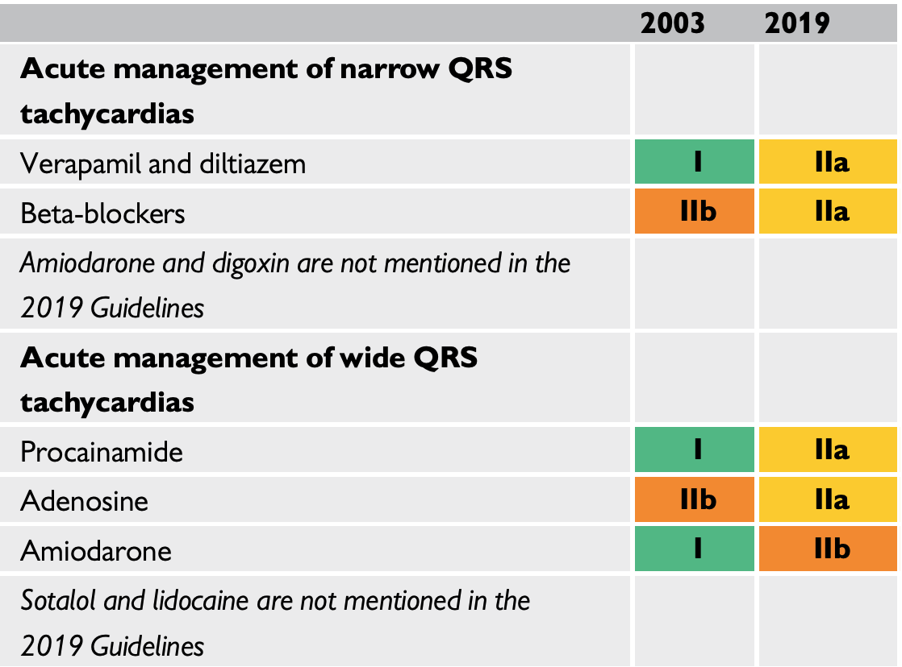
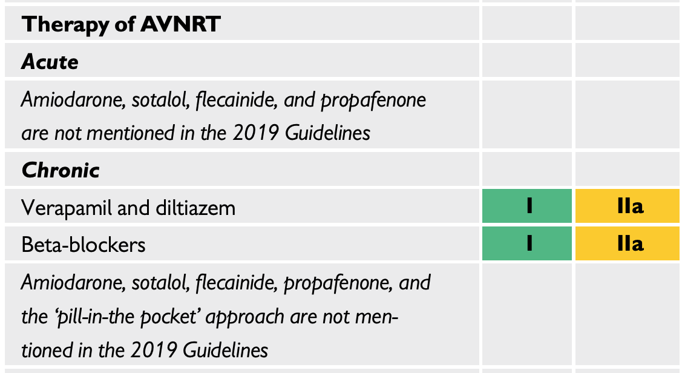

Introduction to AVNRT
Clinical Electrophysiology Conference
Division of Cardiology @ UIC
December 7, 2022
When you come to a fork in the road, take it.
~ Yogi Berra
Objectives
- Understand the relevant anatomy and physiology that allow for AVNRT
- Know how to diagnose typical AVNRT from …
- Clinical history
- Surface ECG
- Intracardiac electrograms
- Understand the underlying mechanisms behind treatment strategies
Outline
- Introduction to AVNRT
- Non-invasive diagnosis
- Non-invasive treatment approach
- Relevant anatomy and physiology
- Intracardiac electrograms
| Abbr. | Abbreviation |
|---|---|
| AAD | antiarrhythmia drugs |
| AH | atrial-His |
| AP | accessory pathway |
| AVNRT | AV nodal reentrant tachycardia |
| CS | coronary sinus |
| HPS | His-Purkinje system |
| HB | His bundle |
| HA | His-atrial interval |
| HV | His-ventricular interval |
| ST | sinus tachycardia |
| SVT | supraventricular tachycardia |
| TCL | tachycardia cycle length |
Definition
- SVT implies involvement of ≥ 1 structure above bifurcation of the His bundle (HB).
- AVNRT is usually a narrow-complex tachycardia that uses the AV node, and functional/anatomical pathways (slow/fast)
Remains unclear if there are anatomical correlates with the regions of slow versus fast conduction.
Requirements
To initiate and maintain a re-entrant rhythm:
- ≥ 2 functionally/anatomically distinct pathways that join proximally and distally to form a closed circuit of conduction
- unidirectional block in one of those potential pathways
- slow conduction down the unblocked pathway, allowing the previous pathway to recover
Sina qua non of reentrant arrhythmia is the ability to reproducibly intiate the tachycardia by timed extrastimuli
Diagnosis
Porter et al 2004, HRS (4)
What’s the rhythm?
A differential for a regular SVT?
Narrow QRS
- AVNRT
- AT
- Orthodromic AVRT due to an accessory pathway
- AFL with fixed AV conduction
- SANRT
- High septal VT
- ST
Wide QRS
- AVNRT or AT with aberrancy
- AVNRT with a bystander accessory pathway
- Antidromic AVRT due to an accessory pathway
- SVT with wider QRS due to electrolyte/AAD therapies
Does the history matter?
- Sudden onset and termination (often positional) more often re-entrant
- Abortive measures such as drinking iced water
- Dizziness and hypotension occur more commonly in short RP tachycardias
- Polyuria/diuresis during tachycardia or at termination due to increased ANP secretion (5)
What next?
- Physical exam?
- 24-48 hour Holter?
- 2-4 weeks of cardiac event monitoring?
- Exercise testing?
- Echocardiogram?
- EP testing?
https://youtu.be/csVn_kvdeBM
Does the exam matter?
- Neck pounding manifests with continuous pulsing cannon A waves, as the RA contracts against a closed tricuspid valve, described as the frog sign (6)
- Does not occur in orthodromic AVRT, as longer VA interval separates the chamber contractions
- 7-fold increase in AVNRT over other SVT with this symptom
Treatment
Guidelines


2019 ESC SVT Guidelines (7)
Vagal Maneuvers
Valsalva maneuver
- Also called Flack’s test, where intrapleural pressure is raised to 40 mm Hg (expiration against closed airway)
- Bradycardia effect seen within first 10-15 seconds
Carotid sinus massage
- Holding constant pressure (not a “massage”) for 5-10 seconds
- Increases pressure in carotid body, firing baroreceptors
- SNS afferent response leads to PNS efferents via vagus (right = SA, left = AV)
- Responses…
- cardioinhibitory with ≥ 3s pause
- vasodepressor is drop of ≥ 50 mm Hg in pressure
- mixed
Adenosine
- an endogenous purine nuceloside, binding to cardiac adenosine A1 receptors
- dose-related prolongation of AV conduction at AH interval
90% success rate:
- 6 mg bolus
- 12 mg bolus
- 18 mg bolus
Repeat dosing after 1 minute (30 seconds for complete effect). Better efficacy with “single syringe strategy” (8)
Right Atrial Anatomy


Fork in the Road
Sinus Rhythm
- Normal P and R axis
- RR = 900
- PP = 900
- QRS = 80
- P = 120
- PR = 160
- QT = 440
SVT
- Suspected retro-grade P
- RR = 350
- QRS = 70
- PR = 300
- RP = 40


Normal sinus beat on multiple electrodes

Tachycardia initiation

A beat from the tachycardia

A beat from the sinus
APD leads to tachycardia


Decremental pacing at 800 ms

Decremental pacing at 400 ms